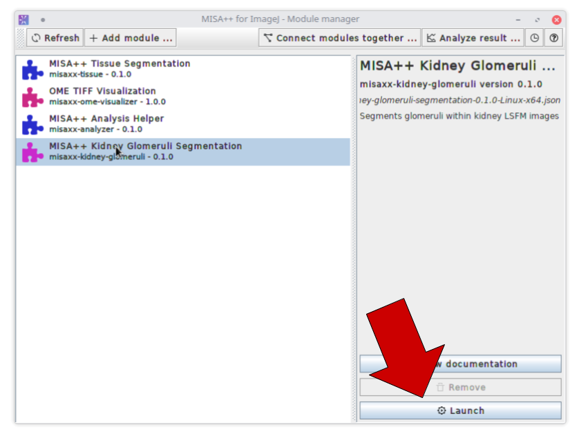
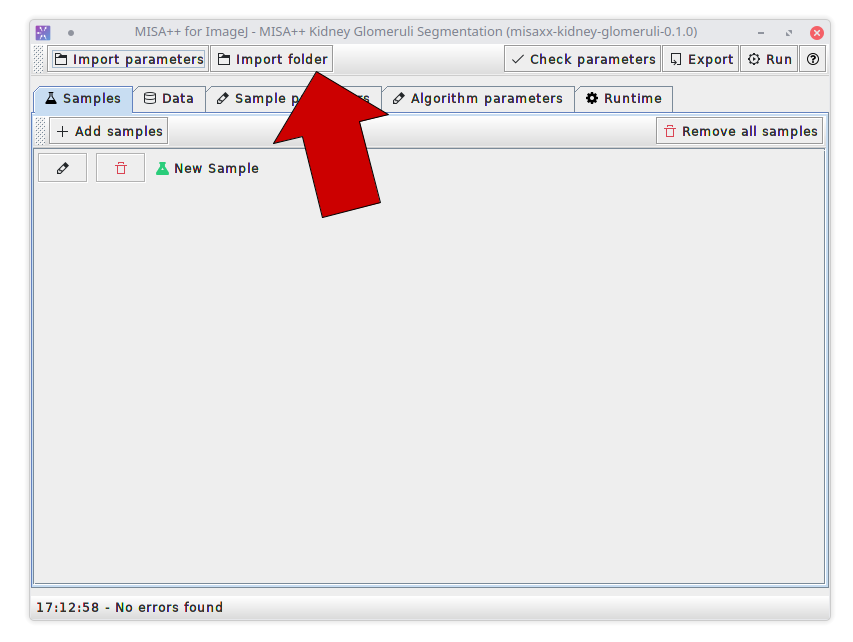
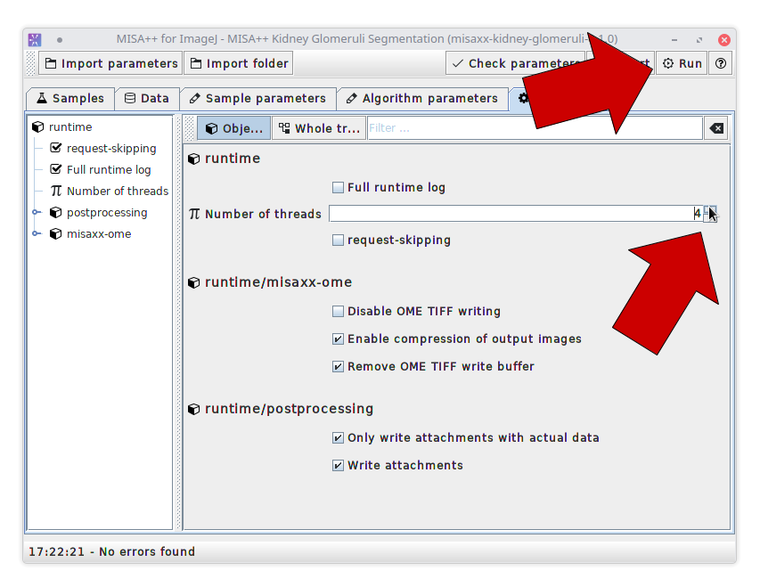
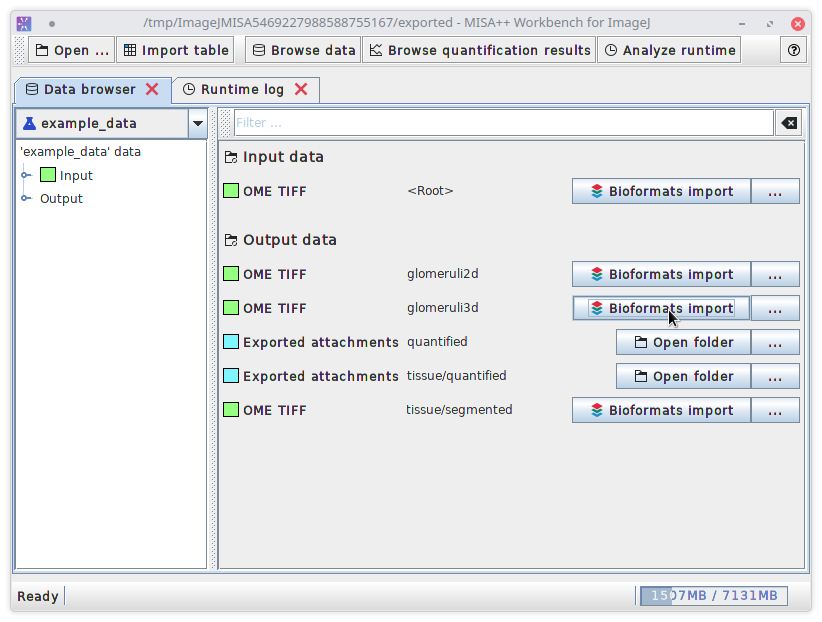
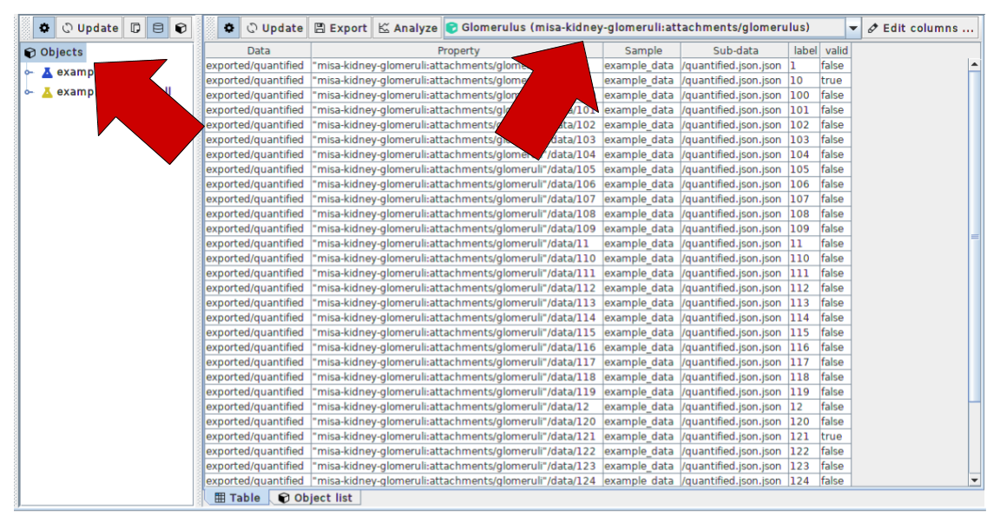
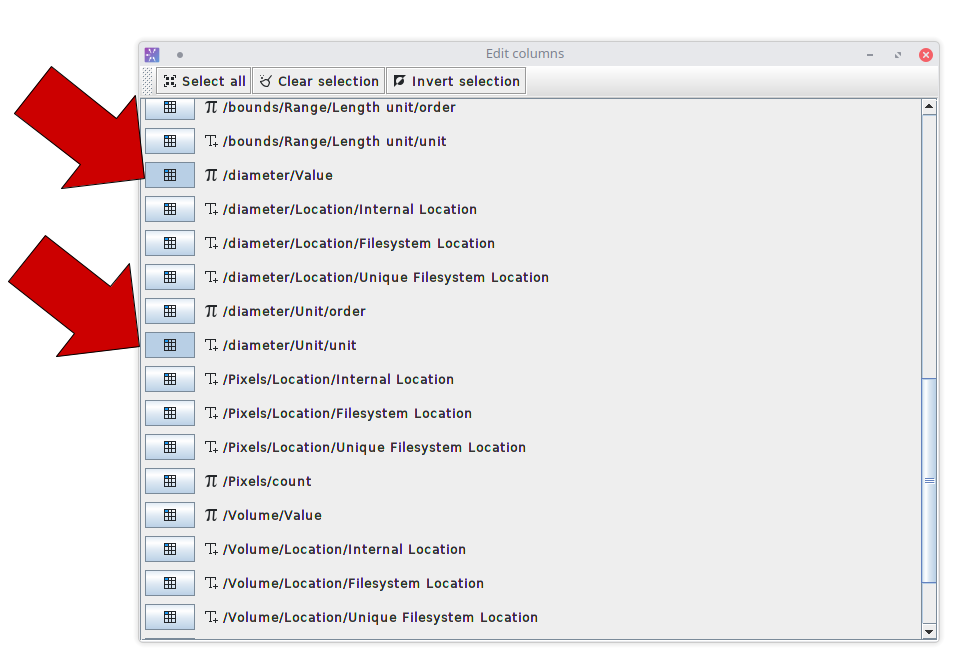

Tutorial: Step by step analysis
Prerequisites
- Make sure that MISA++ Kidney Glomeruli Segmentation and MISA++ Result Analyzer are installed
- Make sure that the MISA++ ImageJ plugin is installed
- Download the example data
Video tutorial
The video tutorial covers the same steps as the written tutorial.
Written tutorial
The following step-by-step tutorial shows the quantitative analysis of glomeruli by creating statistics and plots of their diameter.
 |
Start ImageJ and open the MISA++ plugin by navigating to Plugins → MISA++ for ImageJ. This will open a list of all available MISA++ applications. Select “
Click
|
 |
Click
|
|
Select the folder that contains our example data set and click Open.
Then delete the default sample “ |
 |
To enable multi-threading, select the
Click
|
 MISA++
Kidney Glomeruli Segmentation”.
MISA++
Kidney Glomeruli Segmentation”. Launch
to open a tool that allows preparation of the data and changing
parameters.
Launch
to open a tool that allows preparation of the data and changing
parameters. Import
folder and select the folder that contains the example data
set to automatically add samples and import images.
Import
folder and select the folder that contains the example data
set to automatically add samples and import images.
 New
Sample”, as we already imported all necessary data.
New
Sample”, as we already imported all necessary data. Runtime
tab and increase the number of threads.
Runtime
tab and increase the number of threads.Example: Analyzing results
 |
The analysis tool displays a list of all output data and (if available) input data and allows importing data back into ImageJ. If you want to import the
glomeruli into ImageJ, click
|
|
To analyze quantification results, click
This will open a tool to browse and filter quantification results and transform them into tables that can be plotted. |
 |
To analyze the glomeruli, select
|
 |
Due to performance reasons, the table does not contain all
available information about each glomerulus. To add more, click
Click
|
|
If you are happy with the table, click
This will open a tool that allows you to modify the table and perform statistics. |
|
To calculate mean and variance of the diameter, select a cell
in the “diameter/value” column and navigate to
Add
column →
|
|
Click “Integrate columns” at the top right corner and assign following roles to each column:
Click “Calculate”. |
|
The table now shows the mean and variance of the glomeruli, categorized by the sample and if the glomerulus is valid according to the segmentation algorithm.
Click
|
|
Set the plot type to
|
 Bioformats
Import next to the “glomeruli3d” data.
Bioformats
Import next to the “glomeruli3d” data.
 Browse
quantification results.
Browse
quantification results. Objects
in the middle column and then “
Objects
in the middle column and then “ Edit
columns.
Edit
columns. Clear
selection and select the columns
Clear
selection and select the columns


 Copy
selected column. Then click “OK”.
Copy
selected column. Then click “OK”.

 Undo
to restore the original table and then
Undo
to restore the original table and then

 Box
Plot, set the category to “Table.Sample”, X axis to
“Table.valid” and the list of values to the diameter.
Box
Plot, set the category to “Table.Sample”, X axis to
“Table.valid” and the list of values to the diameter.